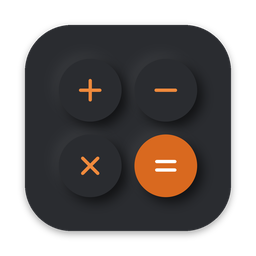
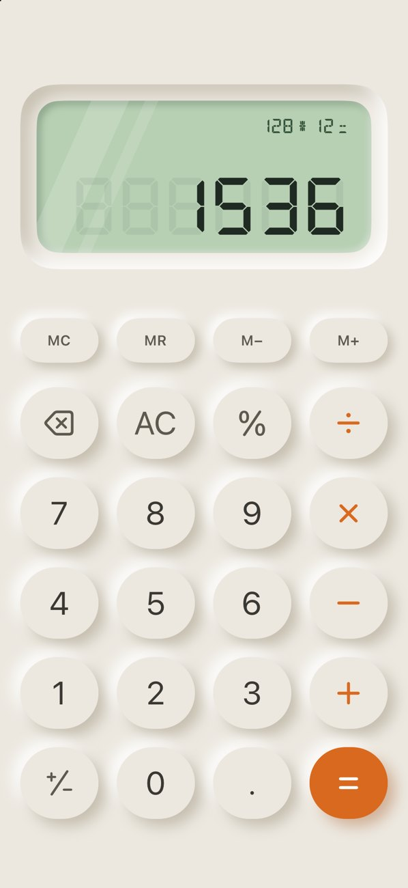
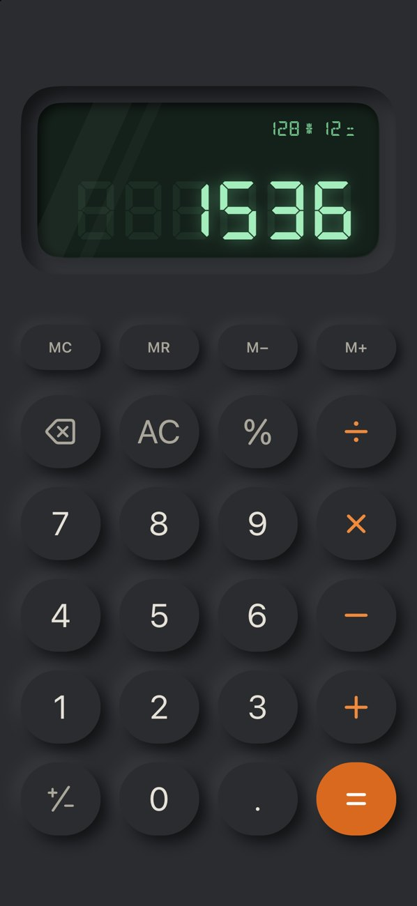
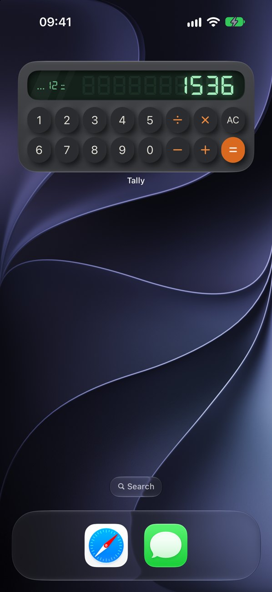

TallySoft, pressable keys. A glowing seven-segment LCD. Real desk-calculator clicks. Tally makes everyday math feel like the calculator on your desk.



Neumorphic keys press in when you tap them, with optional desk-calculator click sounds and haptics.
Turn your phone sideways for trig, powers, roots, logarithms, parentheses and degrees/radians.
Calculate right from your Home Screen with interactive widgets — no need to open the app.
MC, MR, M+ and M−, plus a history of results you can tap to reuse on larger screens.
Long-press the display to copy a result or paste a number from anywhere.
iPhone, iPad, Mac, Apple Watch and Android, in Light and Dark Mode.